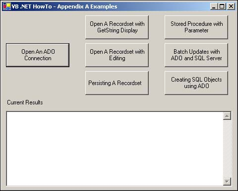

As with ADO.NET, you will be using the Connection object to set up a connection to the database of your choice.
As you get started looking at the different examples, take a look at the main form that will be used to launch each of them, shown in Figure A.3.

The button that is used for this example is called btnOpenConn, and the following is the code used for the Click event, shown here in Listing A.1.
Private Sub btnOpenConn_Click(ByVal sender As System.Object, _
ByVal e As System.EventArgs) Handles btnOpenConn.Click
OpenAndDisplayADOConnection(Me.txtCurrentResults)
End Sub
Each of the buttons calls examples, passing the text box called txtCurrentResults. This text box is located at the bottom of the form. For clarity, the examples have been grouped in modules by section. In this case, the first example routine, called OpenAndDisplayADOConnection, can be found in basConnectionExamples.vb. The code for this routine is shown in Listing A.2.
Sub OpenAndDisplayADOConnection(ByVal txtResults As TextBox)
Dim cnnNet As New ADODB.Connection()
Dim strConnect As String = _
"Provider=SQLOLEDB.1;Integrated Security=SSPI;" &
"Persist Security Info=False;Initial Catalog=Northwind;Data Source=(local)"
cnnNet.Open(strConnect)
txtResults.Text = "New connection string : " & _
vbCrLf & vbCrLf & cnnNet.ConnectionString
cnnNet.Close()
End Sub
As you can see from this example, using the ADO Connection object is virtually the same as ADO.NET. You can see this example being executed in Figure A.4.
Listing A.3 provides two other examples of using the connection object, also found in basConnectionExamples.vb. The first is code to open a connection to a Jet database by using a workgroup file, username, and password. The second is to open a Jet version of the Northwind database.
Sub DisplayProviderAndSecuredAccessDB(ByVal txtResults As TextBox)
Dim cnnNet As New ADODB.Connection()
cnnNet.Provider = "Microsoft.Jet.OLEDB.4.0"
cnnNet.Properties("Jet OLEDB:System database").Value = _
"c:\Books\VBNETHowTo\Examples\AppA\MySystem.mdw"
cnnNet.Open("Data Source=c:\Books\VBNETHowTo\Examples\AppA\MyMDB.mdb;" &
"User Id=Admin;Password=MyPW")
txtResults.Text = cnnNet.ConnectionString
End Sub
Sub OpenNorthwindADOConnection(ByRef cnnCurr As ADODB.Connection)
Dim strConnect As String = "Provider=SQLOLEDB.1;Integrated Security=SSPI;"
& "Persist Security Info=False;Initial Catalog=Northwind;Data
Source=(local)"
Try
cnnCurr.Open(strConnect)
Catch expADO As Exception
MessageBox.Show("The following error occurred: " & expADO.Message)
End Try
End Sub
In the last routine, you can also see how to use the Try…Catch…End Try block to trap any exceptions that might occur. Next you will see how to use the Connection object with the Recordset object in VB .NET.